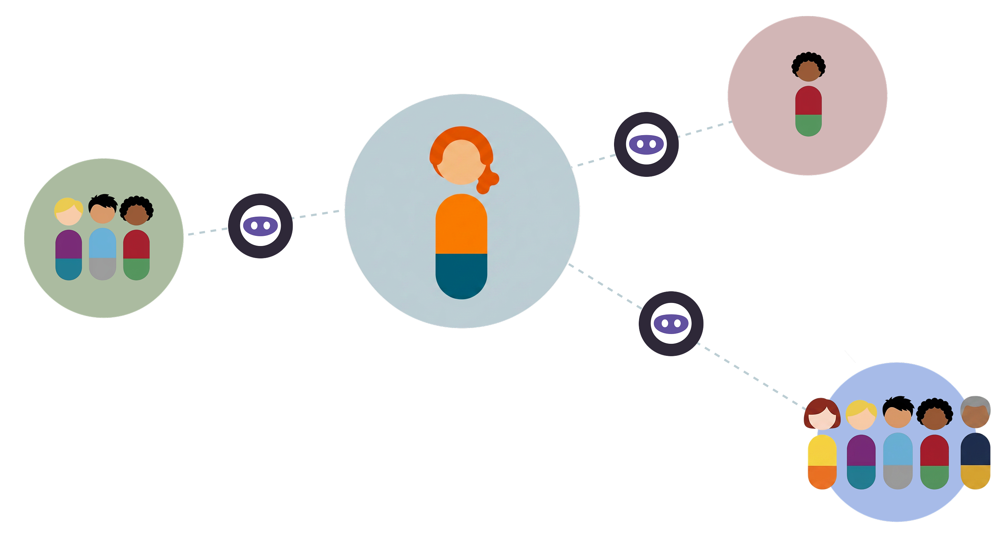

AI-Native
Communications.
An internal exploration into what calling, messaging, and presence look like when AI is at the core of communication, not a feature added on top.
Setting up context.
The project. An internal exploration into what communications could look like when AI is at the core: what happens to calling, messaging, and presence in a world where AI is native, not added on.
My scope. Just two designers, covering the entire comms surface: messaging, calling, contacts, presence. No brief beyond the core question. Since this was an exploration sprint, all constraints were intentionally lifted.
The brief was the problem.
Before designing anything, I had to understand what communication fundamentally is underneath the app layer. What is a phone call? What job is a user trying to do, before apps were the answer to that job?

Concepts, not screens.
Deconstructed the fundamental intent
Of calling and messaging: what they exist to do for users, stripped of any product layer.
Mapped the behavioral shift required
Moving from “open an app” to a free-flowing conversation with an AI. UX must shift from navigating interfaces to declaring intent.
Made the primary artifact a Google Doc
Working in screens too early anchors you to the wrong level of abstraction.
Four levels of AI participation.
Direct Connection
AI just opens the pipe and gets out of the way. It acts only as a voice-activated dialer. AI’s role in communication today.
Background Assist
The user is in the conversation, AI is passively monitoring and surfacing context.
Negotiated Handoff
AI handles the setup, screening, and coordination, then hands off to the user for the live conversation.
Full Delegation
AI handles the entire interaction end-to-end, user is never involved live. Notifies user after task has completed.
Message Smart Reply

We mapped hero use cases to the levels and something useful surfaced: each feature had a level of AI participation that felt right — and it wasn’t always Full Delegation. The framework gave us a way to evaluate that, rather than default to maximum AI everywhere.
The hard questions still open.
Relationships are complex
To get this right, agents need to map the nuances of how people relate to one another: not just who you’re talking to, but how. That’s a much harder modeling problem than a contact list.
Social intelligence
Etiquette, emotional cues, reading the room. Are our agents intelligent enough to factor these in? And if they’re not, we need to design around that gap, not past it.
Safety and privacy
For any of this to work at scale, users have to trust the agent isn’t doing more than they sanctioned. That’s not a legal checkbox; it’s a design challenge.
The social profile problem
A profile may not be a simple list. To truly capture someone’s social comfort, it may need to be far more complex and dynamic than anything we’ve designed before.
What does it actually mean to represent someone’s relationships faithfully enough for an agent to act on their behalf?
Vocabulary and direction.
This didn’t ship
It was an exploration sprint. The point was never to launch a product, but to start thinking differently about the communication feature space.
It created focus for real workstreams
What started as concepts, xfn teams began breaking down into scoped workstreams with real timelines and resourcing conversations.
It became a classification tool for the whole comms surface
Teams started mapping existing and proposed features to the four levels — finding common ground on where each feature sat and which level was actually worth pursuing.